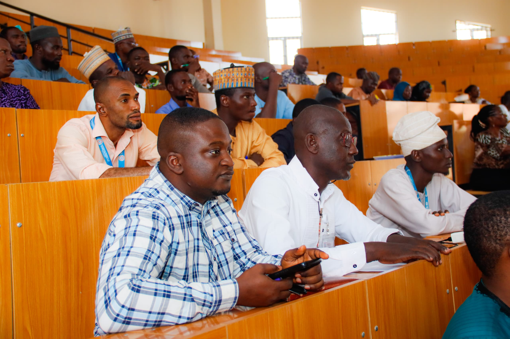
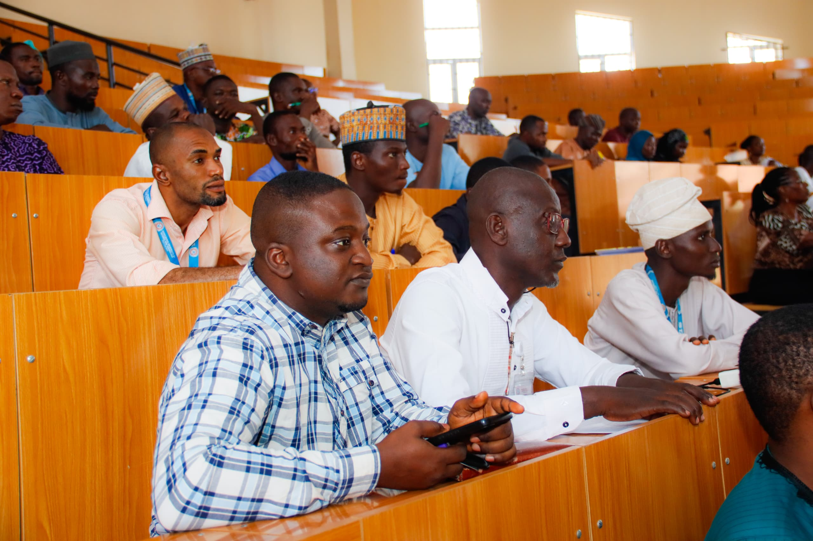

CUSTECH's Commitment to Cutting-Edge Research and Innovation
CUSTECH is actively involved in cutting-edge research across multiple sectors, including engineering, environmental sciences, computer sciences, biological sciences, and more. The university has an established Directorate of Research, Innovation, and Development (DRID), which is dedicated to advancing academic and scientific research. Additionally, the university publishes the Confluence University Journal of Science and Technology (CUJosTech), a peer-reviewed open-access journal that covers a wide range of scientific and technological fields
DRID Hosts First Workshop on Research Funding and Grant Writing
Research at CUSTECH is designed to bridge the gap between academia and industry, with the aim of developing innovative solutions that address real-world challenges. The university encourages both undergraduate and postgraduate students to engage in research activities, offering state-of-the-art laboratories, facilities, and expert faculty guidance to foster critical thinking and problem-solving skills.
DRID Hosts First Workshop on Research Funding and Grant Writing
Today, Tuesday, 26th November 2024, the Directorate of Research Innovation and Development (DRID) at Confluence
University of Science and Technology (CUSTECH), Osara organized a comprehensive workshop for
university staff members at the new Lecture Theater, take-off site, Osara.
The event, themed “Research Funding and Value-Based Approach to Grant Writing,” was officially opened
by the university’s Vice Chancellor, Engr. Prof. Abdulrahman Asipita Salawu. In his opening remarks, Prof.
Salawu encouraged participants to fully engage with the workshop and maximize the learning opportunities presented.
Three distinguished speakers delivered insights into grant acquisition and writing:
Prof. MT Isa, who was unavoidably absent, was represented by Dr. David Apeh (SIWES Liaison Officer),
Prof. A.U Itodo (Director, Directorate of Research innovation and Development),
Prof. JJ Dukiya (Dean, Faculty of Environmental Sciences).
The speakers provided explicit guidance on how to access, write, and successfully secure grants from various
agencies and organizations. Participants were particularly enthusiastic about the practical knowledge shared by
the speakers during the workshop.
Pharm. Muhammed Asuku Audu, the Director of Academic Planning, further motivated attendees by challenging them to
excel in their respective fields and avoid mediocrity.
Workshop participants expressed their excitement about the event and are eagerly looking forward to exploring
new grant opportunities for their research endeavors.
To enrich CUSTECH’s research profile, consider focusing on interdisciplinary projects
that align with local and global challenges, such as biotechnology, environmental sustainability,
and health sciences. Collaborative research with international universities
and leveraging advanced methodologies can position CUSTECH as a hub of innovation.
addition to its academic faculties, the university has established several partnerships and
collaborations with industry and academic institutions, which help support its research endeavors.
These partnerships allow students and faculty to work on cutting-edge projects that integrate
real-world applications and innovative technologies.
For more details about the university's research initiatives or access
to the CUJosTech journal, you can
visit CUSTECH's official website or the journal's page.


 
